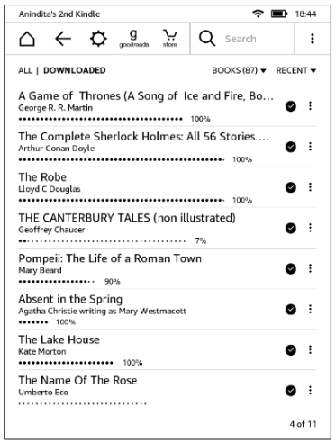
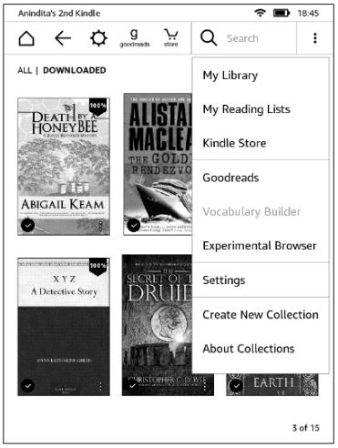
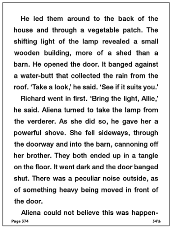
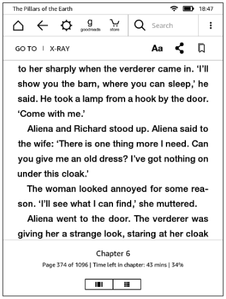
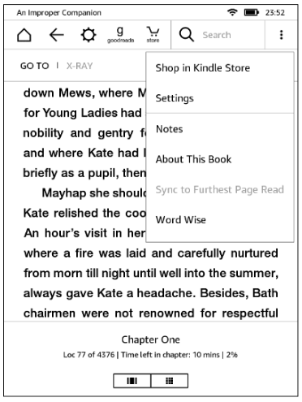
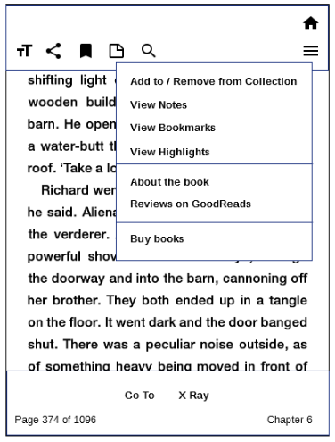

Kindle UI redesign
I am a heavy reader and I own a Kindle Reader, which I've been using for the past 3 years. I do not like the user interface because it takes several taps to do common reading tasks such as browsing my library, jumping between pages of a book, or going back to bookmarks. The following wireframes show how I'd like my Kindle to be.
Home page: current UI
List view |
Grid view |
Either view, with menu |
Home page: proposed UI
Bookshelf view |
Bookshelf view with menu |
Improvements
- Less time to browse the library: 3x more books than list view and 4x more books than grid view
- More user control: Go to a bookshelf non-sequentially through pagination at the bottom
- Visual appeal: Bookmarks peeping from the books show current reading position rather than percentages
- Less clutter:
- Actions are moved to a hamburger menu on top
- Most common action (Search) is separate, so needs fewer taps
- Actions not relevant on a bookshelf page are removed
|
Book-open page: Reading
Current UI |
Proposed UI |
Improvements
- Visual appeal: Indicator of unread pages on either side of current page
- Less clutter: Page number in 'Page X of Y' format for just-enough-information
|
Book-open page: Menu options
Current UI: Menu |
Proposed UI: Menu |
Improvements
- Less thumb strain: Most frequent actions are at the bottom, less frequent ones are at the top
- Fewer taps: Common reading actions, such as notes and highlights are available upfront
|
Current UI: More menu |
Proposed UI: More menu |
Improvements
- Less clutter: Actions not relevant to reading are removed from menu and pushed under the Home icon
- Fewer taps: Easy to access bookmarks, notes, highlights, and do other common reader actions when a book page is open and is being read
|